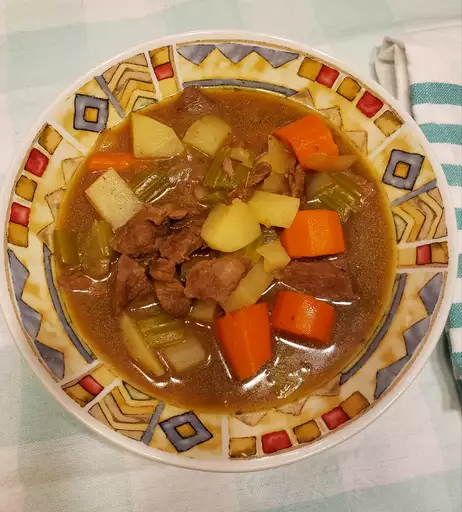

Beef Stew
About Meal
A homemade beef stew recipe for the stovetop. This traditional stew is good eaten from a bowl or poured over biscuits. Substitute lamb and voila!... Irish stew! If thicker stew is desired, add more cornstarch and/or take the cover off for the last 15 to 20 minutes. The longer this simmers, the better! Vary the herbs to your taste.
Prep Time:
20 mins
Cook Time:
2 hrs 15 min
Total Time:
2 hrs 35 mins
Servings:
10
Ingredients
- 3 tablespoons vegetable oil
- 2 pounds cubed beef stew meat
- 4 cubes beef bouillon, crumbled
- 4 cups water
- 1 teaspoon dried rosemary
- 1 teaspoon dried parsley
- ½ teaspoon ground black pepper
- 3 large potatoes, peeled and cubed
- 4 carrots, cut into 1 inch pieces
- 4 stalks celery, cut into 1 inch pieces
- 1 large onion, chopped
- 2 teaspoons cornstarch
- 2 teaspoons cold water
Directions
Step 1
Heat oil in a large pot or Dutch oven over medium-high heat; add beef and cook until well browned.
Step 2
Dissolve bouillon in 4 cups water and pour into the pot; stir in rosemary, parsley, and pepper. Bring to a boil; reduce heat to low, cover, and simmer for 1 hour. Stir in potatoes, carrots, celery, and onion.
Step 3
Dissolve cornstarch in 2 teaspoons of cold water; stir into stew. Cover and simmer until beef is tender, about 1 hour.